Simulator: MuJoCo 3 (Isaac Lab is not installed). Sensor: Intel RealSense D455 pinhole RGB-D, 848x480, VFOV 58 deg, IMU site unused. Input: ONE depth frame per case, back-projected to world XYZ. Not lidar, not a bag. Learned residual does not override a successful D455 baseline box (that was the red-box drift). Residual is only a fallback if the detector fails. Table pixels with z<2cm are dropped (stand-in for semantic table removal). D455 depth K uses official VFOV 58 deg at 848x480 (fx=fy=432.971). Resulting HFOV is 88.80 deg vs datasheet 87 deg.
vintage_medium_clear n=53799 baseline_ok=True composite=0.182 learned_ok=True composite=0.182
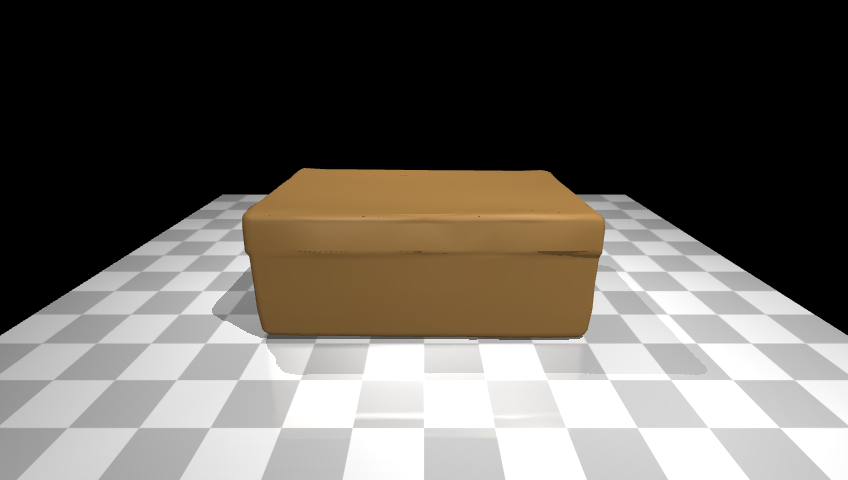
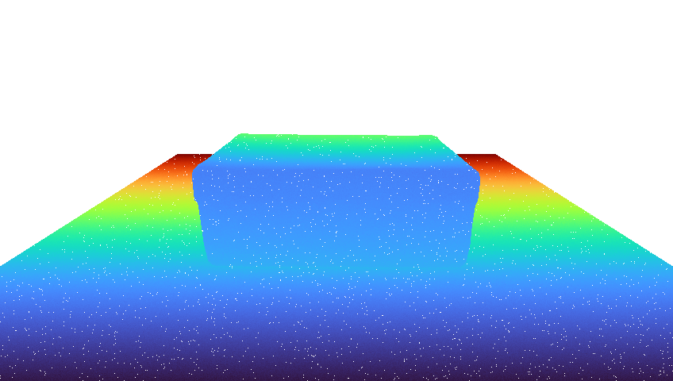
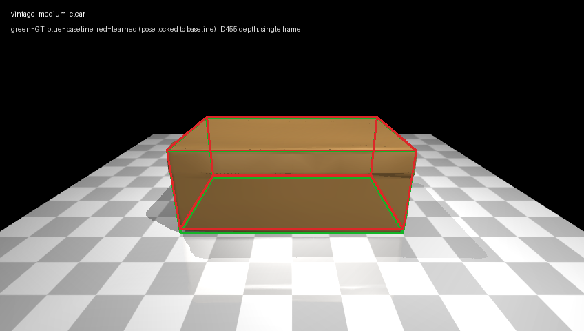
vintage_medium_yaw07 n=50879 baseline_ok=True composite=0.190 learned_ok=True composite=0.190
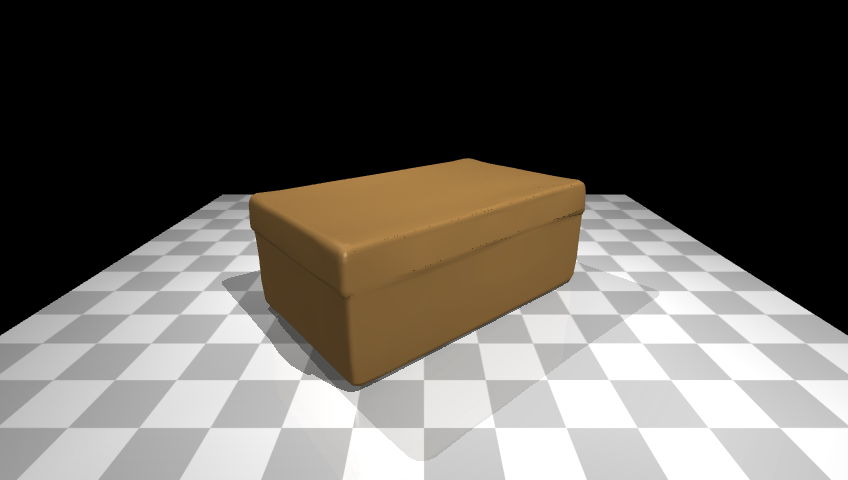
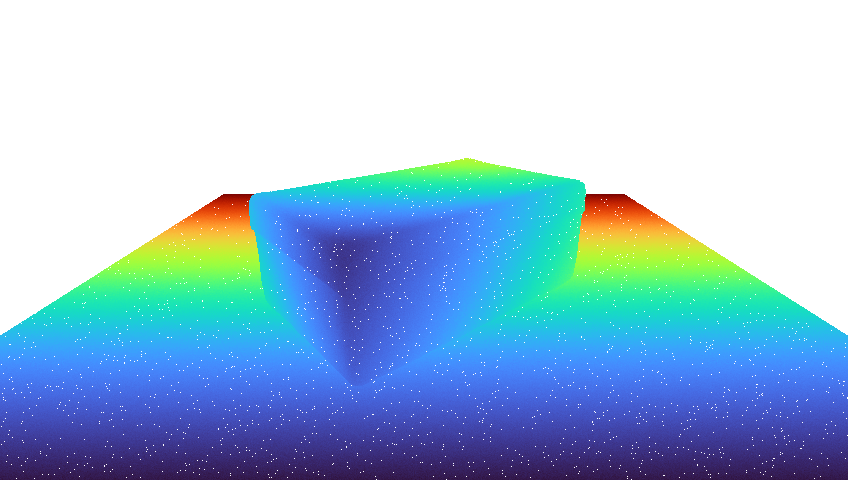
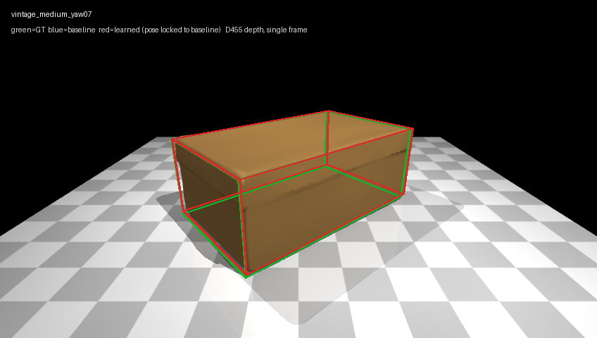
vintage_medium_occluded n=60251 baseline_ok=True composite=0.192 learned_ok=True composite=0.192
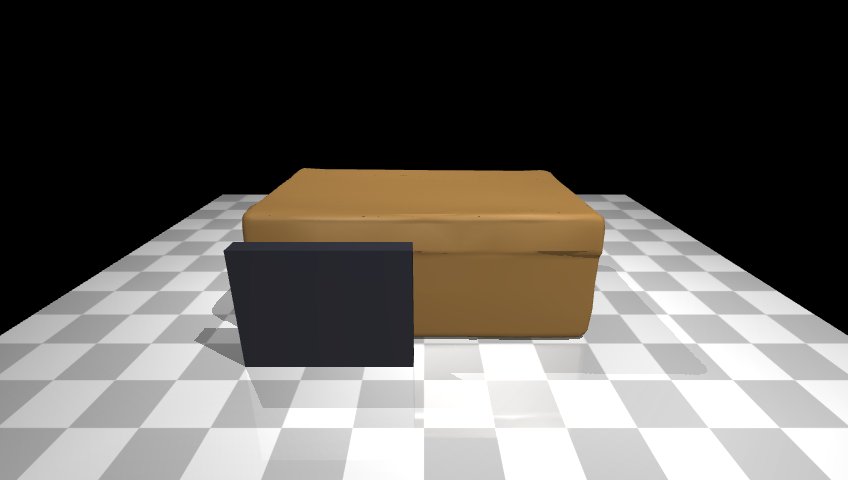
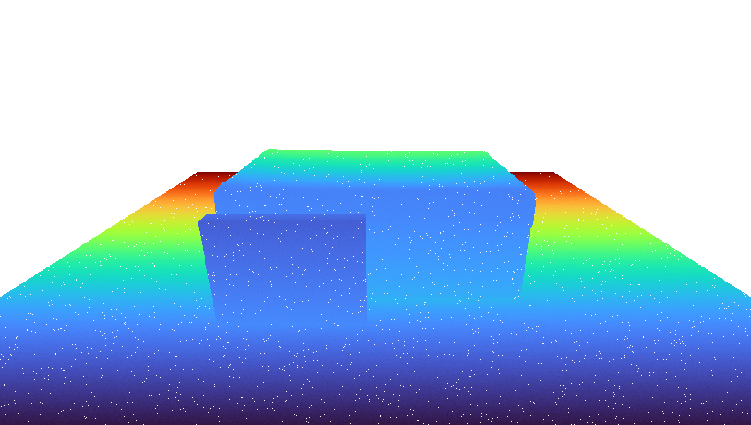
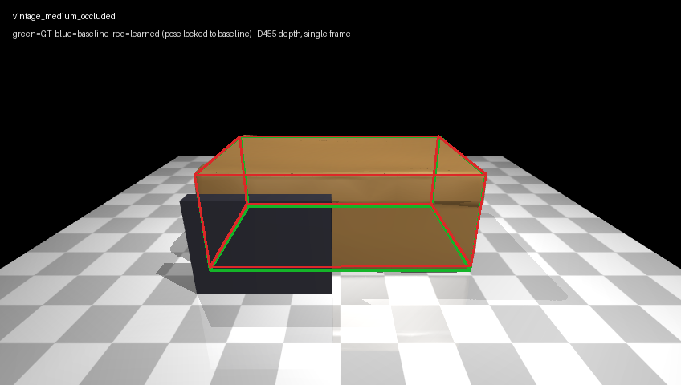
vintage_large_clear n=72203 baseline_ok=True composite=0.241 learned_ok=True composite=0.241
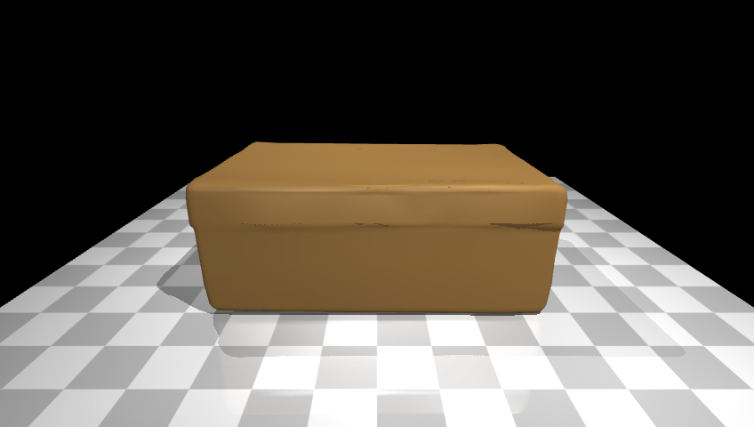
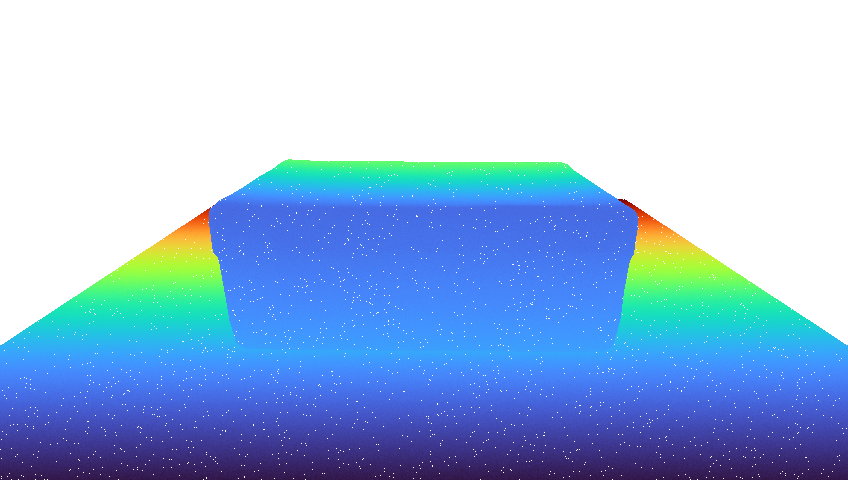
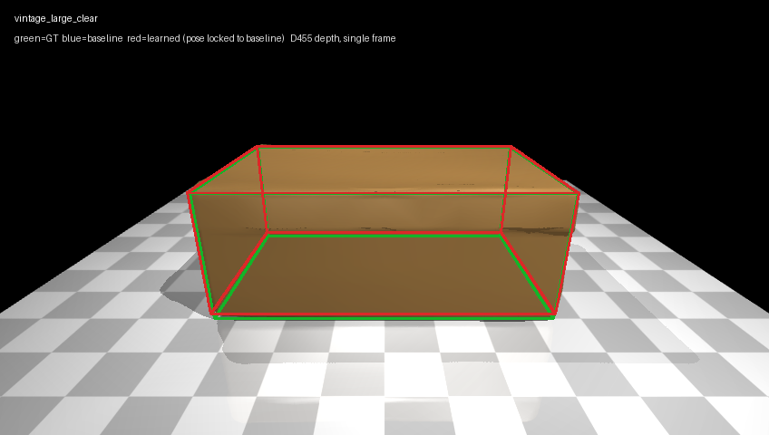